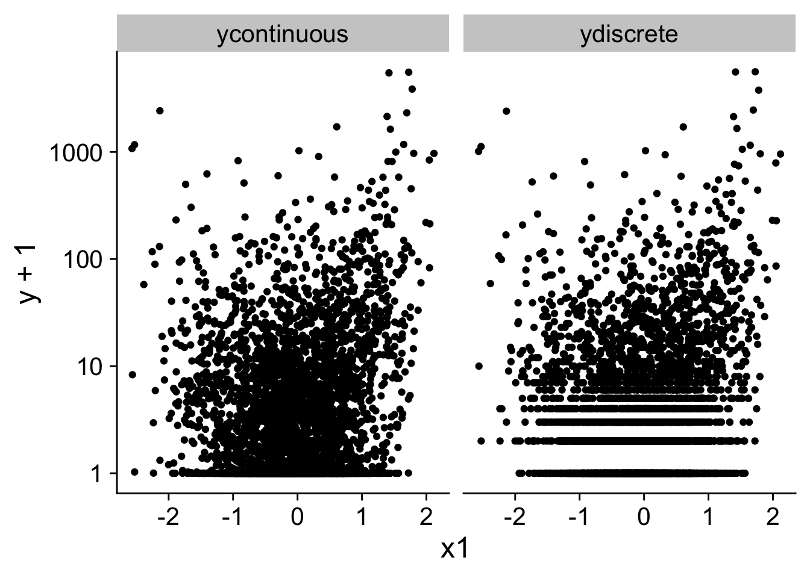

In the previous section, I made the case for using OLS regressions even when the outcome variable is a discrete variable. This is especially true in the case that we are interested in estimating the effect of an intervention. The coefficient that we are getting can easily be interpreted as the difference in the probability of getting one outcome over the other.
Type of outcome data.
The type of outcome variables this argument applies to are variables that are the result of a stable multiplicative process. In earlier lectures, I have made the point that we can think of the contribution of a CEO to the firm as a multiplicative effect. The CEO’s ability has a larger contribution to firm value if they are working in a larger firm. Probably the most basic example in finance is compound interest. If we start with $100 and the yearly interest rate is 5%, we can write our wealth as a function of time (in number of years).
\[
W(T) = 100 (1 + 0.05)^T
\]
Now, imagine that we divide the interest and the number of years by \(N > 1\). That is, imagine that we pay an interest of \(\frac{0.05}{N}\) every period with \(N\) periods per year.
In the where we have a lot of small periods (\(N \to \infty\)), we can write our wealth as follows.
\[
W(T) = 100 e^{0.05 T}
\]
In general, if we have a variable \(V\) that is the results of a multiplicative process of small components with a rate of change \(r\) and \(S\) steps and a starting value \(V_0\), we can write \(V(S)\) as follows.
The Poisson distribution itself is the discrete equivalent of this idea. The distribution models the number of events, \(V(S)\), for a population, \(V_0\), when the underlying process follows a fixed occurrence rate \(r\) per unit of time and per element of the population. The theoretical case for the Poisson regression is that the coefficients on the linear scale targets, \(r\), the instantaneous rate of change or the rate of occurrences 1 which has a meaningful economic interpretation for non-negative variables such as number of corporate patents, carbon emissions, or distance between companies (Cohn, Liu, and Wardlaw 2022). They also make sense for variables that naturally grow like firm size, revenues, or CEO wealth and income.
The Case for a Poisson regression
Intuition
The statistical case for the Poisson regression is extensively documented in Cohn, Liu, and Wardlaw (2022). Here I will just list the main advantages and shortly demonstrate them with a simulated example. There are a number of alternative approaches that we could use to model these type of variables. The obvious alternative is to model the variable \(\textrm{log}(V)\) in a linear regression. However, this does not work if we have a lot of observations where \(V = 0\). One proposed solution in the literature is then to use the transformation \(\textrm{log}(V + 1)\). Cohn, Liu, and Wardlaw (2022) show that the coefficients with the log plus 1 approach are hard to interpret and can have a different sign than with a poisson regression. A further strength of the Poisson approach is that it allows for the inclusion of fixed effects in the regression without changing the interpretation of the coefficients. Remember that with generalised regressions the effect depends on other parts of the model if we are interested in the non-transformed scale, \(V\). The concession that we have to make is that we are interpreting the effects on the transformed scale of \(r\) and not on the scale of \(V_0\). As I explained above, this can often be a reasonable assumption to make.
One criticism of the Poisson regression is that it assumes that the variation around the mean is proportional to the mean. However, if this assumption does not hold, the estimates of the coefficients will not be biased and (cluster) robust standard errors are robust against violations of this assumption.
A last point is that, just like in the binomial case, we could just use a linear model on \(V\) or \(\frac{V}{V_0}\). However, because with multiplicative effects (or exponential growth) \(V\) can vary by multiple orders of magnitude, the estimates of the coefficients can be noisy and have large standard errors.
Cohn, Liu, and Wardlaw (2022) retest six published papers that use a log transformed dependent variable and compare it to a Poisson regression. They find that in all six cases the coefficient is markedly different and in three cases the sign changes. Moreover, the change in the coefficient is larger than removing any control variables. The type of regression matters more than the control variables.
Note
In my view, Cohn, Liu, and Wardlaw (2022) makes a strong case that for a lot of non-negative outcome variables in accounting and finance research designs, the Poisson regression should be the default. This is also my recommendation.
Simulation
In the simulation below, I create a dataset for a discrete and a continuous \(y\) where the expected value of \(y\) is given by
\[
E(y|x_1, x_2) = e^{-0.3 x_1 + x_2}
\]
This is the data generating process that we associate with a multiplicative process or from a Poisson count process. We will be interested in estimating the effect of \(x_1\) on \(y\) which in the Poisson regression should give an estimate of \(-0.3\).
The data generating process also includes fixed effects and additional variation around this expected value which violates the assumptions of the naive Poisson regression. The details of this approach are not important and require knowledge of the negative binomial distribution(rnbinom) to get count data and the chi-squared distribution (rchisq).
I plot the data on log + 1 scale and you can see that the figure looks distorted or weird for lower values of ydiscrete or ycontinuous. This is by now means proof but it is indicative of some of the problems with the log or log plus 1 transformation.
panel %>%pivot_longer(c(ydiscrete, ycontinuous), values_to ="y") %>%ggplot(aes(y = y +1, x = x1)) +geom_point() +scale_y_log10() +facet_wrap(~name)

For both the continuous and count variable, I run four regression models with fixed effects.
The Poisson regression with \(y\) as dependent variable.
An OlS regression with \(\textrm{log}(y + 1)\) as dependent variable.
An OLS regression with \(y\) as dependent variable. Because this regression is not on the rate of change scale, we do not expect a coefficient of -0.3 here. The main purpose is to show how noisy the estimate is.
An OLS regression with \(\frac{y/x_2\) as dependent variable. This approach will suffer from the same noisy estimates.
You can see that the Poisson regression is pretty close to recover the true estimate of -0.3 both for the count as for the continuous case with small standard errors. The log plus 1 approach gives a considerably different estimate and the OLS estimates are positive instead of negative but with large standard errors.
References
Cohn, Jonathan B., Zack Liu, and Malcolm I. Wardlaw. 2022. “Count (and Count-Like) Data in Finance.”Journal of Financial Economics 146 (2): 529–51. https://doi.org/10.1016/j.jfineco.2022.08.004.